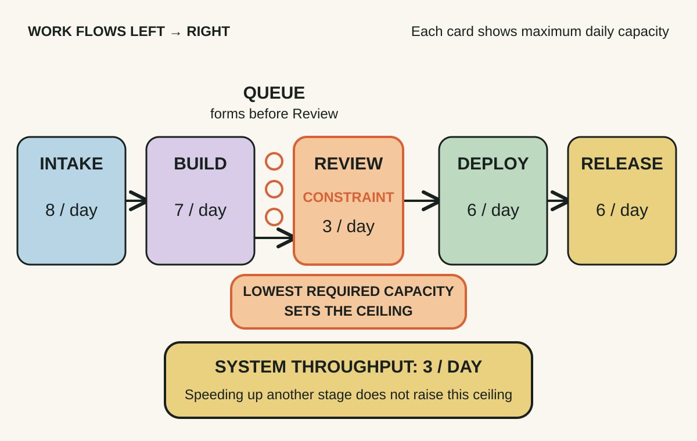
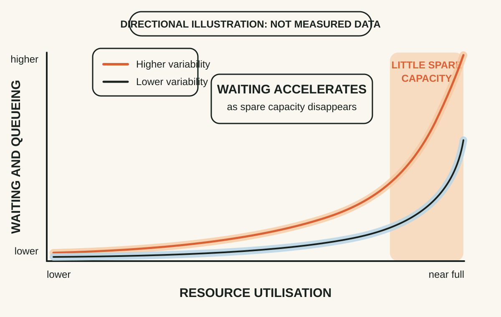
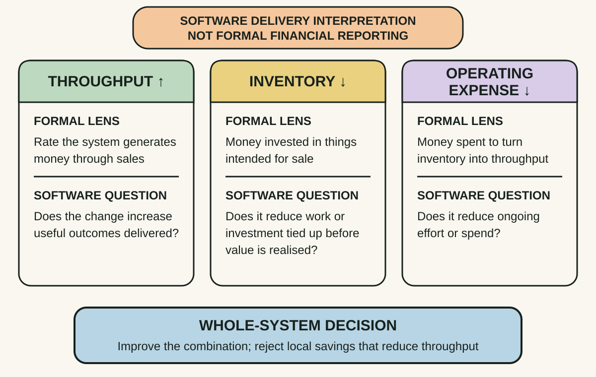

Daily lesson ·
The Goal
Improve the whole system by finding what actually limits it, managing flow instead of busyness and judging changes by global outcomes.
Idea 1
The constraint sets the system's ceiling #
The idea
In a chain of dependent work, system output is limited by the constraint: the resource or condition that most limits progress toward the goal. Improving a non-constraint may raise local output while leaving total throughput unchanged.
A constraint need not be a machine. In knowledge work it may be review capacity, a test environment, a specialist, release governance, unclear product decisions or even insufficient demand.
The wider Theory of Constraints turns this into five focusing steps: identify the constraint, exploit the capacity already available, subordinate other work to that decision, elevate the constraint if necessary, then repeat when the constraint moves—without letting old policy become the next constraint.

Why it matters
Teams often improve places that are visible, annoying or easy to optimise. Constraint thinking ranks improvement work by effect on the system's goal.
Apply it today
Map one active delivery stream in five to eight steps and mark where work waits longest or where scarce capacity controls the rest.
Ask: if this step gained 20% more effective capacity tomorrow, would completed value reach users faster? If not, revise the hypothesis.
Caveat or failure mode
Constraints move, and the first visible backlog may only be a symptom. Policy, decision latency, skills or demand can constrain the system without forming an obvious queue.
Idea 2
Balance flow, not local utilisation #
The idea
The Goal challenges the assumption that every resource should stay busy. In a dependent system, producing faster upstream than the constraint can consume creates inventory and queues rather than useful output.
The hiking story adds variability: dependent steps cannot rely on small fluctuations neatly cancelling. Delays compound when each step must wait for the previous one.

Why it matters
A reviewer booked at 100% has no capacity for urgent defects, clarification, rework or variation in task size. Everyone can look busy while delivery slows.
Apply it today
Choose one scarce person or function and compare incoming work with available capacity over the last few weeks.
Protect flow by removing low-value demand, preparing work better, reducing rework, batching less or reserving explicit slack.
Caveat or failure mode
Software delivery is not a simple single-server queue, and collaboration can change capacity dynamically. Use the principle to diagnose delay; do not claim a precise utilisation threshold the evidence cannot support.
Idea 3
Measure the whole system, not the department #
The idea
Goldratt reframes operational decisions around throughput, inventory or investment, and operating expense. In its original business context, throughput is money generated through sales, inventory is money tied up in things intended for sale, and operating expense is the money spent turning investment into throughput.
A local cost reduction can still harm the company if it lowers throughput or traps more work and capital in the system.

Why it matters
Tickets closed, utilisation, lines of code and departmental cost can improve while users receive value more slowly. Global measures reconnect activity to purpose.
Apply it today
Take one improvement proposal and test its effect on useful outcomes delivered, work tied up and ongoing effort or spend.
If it only improves a local metric and has no credible system-level benefit, challenge its priority.
Caveat or failure mode
Throughput accounting is a management framework, not a replacement for statutory accounting. Short-term classifications can also hide long-run capacity investments; use the lens without pretending it is a complete theory of finance.
Retrieval practice · 6 questions
Learning check
Answer all 6 before checking. Your first attempt is saved only in this browser, and each explanation appears after you check your answers. A 3-question review can appear on the homepage from tomorrow.
6 questions not yet answered.
Today's experiment · 8 minutes
Run a constraint scan
- Write one workflow as five to eight steps.
- Circle the step with the largest queue, longest wait or scarcest capacity.
- Write: I think the current constraint is ___ because ___.
- Name one exploit action that protects its existing capacity and one subordinate rule that stops upstream work overwhelming it.
Observable result: You finish with a constraint hypothesis and one testable intervention—not a full process redesign.
Verification
Source notes
These links support the attributed claims and edition details; applications and extensions are labelled in the lesson.
One-sentence takeaway